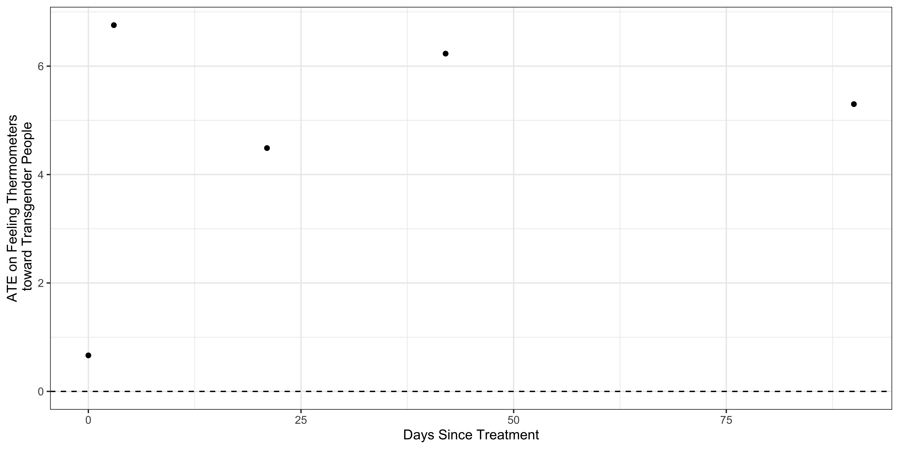
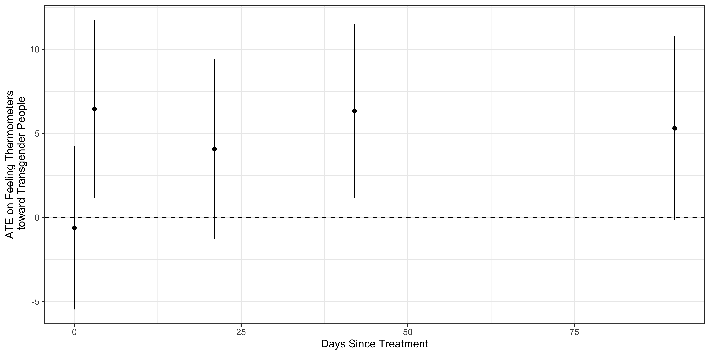

class:inverse, middle, center # 🔍 ## Statistical Programming
Mapping Concepts to Code
You're learning how to map conceptual tasks to commands in R
Skill
Common Commands
Setup R
library(), ipak()
Load data
read_csv(), load()
Get HLO of data
df$x, glimpse(), table(), summary()
Transform data
<-, mutate(), ifelse(), case_when()
Reshape data
pivot_longer(), left_join()
Summarize data numerically
mean(), median(), summarise(), group_by()
Summarize data graphically
ggplot(), aes(), geom_
Mapping Concepts to Code
Takes time and practice
Don’t be afraid to FAAFO
Don’t worry about memorizing everything.
Statistical programming is necessary to actually do empirical research
Learning to code will help us understand statistical concepts.
Learning to think programmatically and algorithmically will help us tackle complex problems
Data Wrangling from the Lab:
df %>%# Calculate difference between Survey and Non-Survey Takersgroup_by(treatment_assigned) %>%filter(!is.na(treatment_assigned)) %>%# Calculate means for variables that start with "therm_trans"summarise(across(starts_with("therm_trans"), \(x) mean(x, na.rm =TRUE)))%>%# Transpose (flip) datapivot_longer(cols =starts_with("therm_trans"),names_to ="Covariate",values_to ="Means" ) %>%# Gather means into separate columns by treatment statuspivot_wider(names_from = treatment_assigned,values_from = Means )%>%# Calculate ATEs, add labelsmutate(ATE =`Trans-Equality`- Recycling,Days =c(0,3,21,42,90) )-> ate_df
df %>%# Calculate difference between Survey and Non-Survey Takersgroup_by(treatment_assigned) %>%filter(!is.na(treatment_assigned)) %>%# Calculate means for variables that start with "therm_trans"summarise(across(starts_with("therm_trans"), \(x) mean(x, na.rm =TRUE))) #<<
In words, this formula says, to calculate the average of x, we sum up all the values of \(x_i\) from observation \(i=1\) to \(i=n\) and then divide by the total number of observations \(n\)
Mean: Definitional
In this class, I don’t put a lot of weight on memorizing definitions (that’s what Google’s for).
But being comfortable with “the math” is important and useful
Definitional knowledge is a prerequisite for understanding more theoretical claims.
Mean: Theoretical
Suppose I asked you to show that the sum of deviations from a mean equals 0?
Showing the deviations sum to 0 is another way of saying the mean is a “balancing point.”
This turns out to be a useful property of means that will reappear throughout the course
If I asked you to make a prediction, \(\hat{x}\) of a random person’s height in this class, the mean would have the lowest “mean squared error” (MSE \(=\frac{1}{n}\sum (x_i - \hat{x_i})^2)\)
Mean: Theoretical
Occasionally, you’ll read or here me say say things like:
The sample mean is an unbiased estimator of the population mean
In a statistics class, we would take time to prove this.
The sample mean is an unbiased estimator of the population mean
Claim:
Let \(x_1, x_2, \dots x_n\) from a random sample from a population with mean \(\mu\) and variance \(\sigma^2\)
In an intro statistics class, the ordering might be reversed.
Trade offs:
Pro: We actually get to work with data and do empirical research much sooner
Cons: We substitute intuitive understandings for more rigorous proofs
class:inverse, middle, center # 🔍 ## Data visualization
Data visualization as a tool for descriptive inference
A statistical graphic is a mapping of data variables to aes thetic attributes of geom etric objects.
At a minimum, a graphic contains three core components:
data: the dataset containing the variables of interest.
aes: aesthetic attributes of the geometric object. For example, x/y position, color, shape, and size. Aesthetic attributes are mapped to variables in the dataset.
geom: the geometric object in question. This refers to the type of object we can observe in a plot For example: points, lines, and bars.
ate_df %>%ggplot(aes(Days, ATE))+geom_point()+geom_hline(yintercept =0,linetype=2)+theme_bw()+labs(x="Days Since Treatment",y ="ATE on Feeling Thermometers\n toward Transgender People")

ATEs with Confidence Intervals
df %>%# Get the select the columns whose names start with vf_select(starts_with("therm_trans"))%>%# Extract the column namesnames()%>%# Create the formulas to calculate the diff in means for# Each variable purrr::map(~formula(paste0(.," ~ treatment_group"))) %>%# Caclulate the difference in means for each variable purrr::map(~difference_in_means(., data = df)) %>%# Put the output into a tidy data frame.map_df(tidy)%>%mutate(ATE = estimate,Days =c(0,3,21,42,90) ) -> ate_dfate_df[,-1]
ate_df %>%ggplot(aes(Days, ATE))+geom_point()+geom_linerange(aes(ymin=conf.low, ymax=conf.high))+#<<geom_hline(yintercept =0,linetype=2)+theme_bw()+labs(x="Days Since Treatment",y ="ATE on Feeling Thermometers\n toward Transgender People")

Data visualization is an iterative process
Data visualization is an iterative process
Good data viz requires lots of data transformations
Start with a minimum working example and build from there
Don’t let the perfect be the enemy of the good enough.
class:inverse, middle, center # 🔍 ## Causal inference
Causal inference is about counterfactual comparisons
Causal inference is about counterfactual comparisons
What would have happened if some aspect of the world either had or had not been present
Causal inference is about counterfactual comparisons
Two ways to represent causal claims
–
DAGs helped illustrate types of bias
Confounder bias: Failing to control for a common cause (aka Selection Bias, Omitted Variable Bias)
Collider bias: Controlling for a common consequence
–
Potential Outcomes Notation helped illustrate the Fundamental Problem of Causal Inference
Fundamental Problem of Causal Inference
For an individual, we only observe one of potential many potential outcomes.
Did taking an aspirin make your headache go away?
Need to compare you with aspirin and without, but only see one version of the world.
Individual Causal Effects are unidentified
Causal Identification
Causal Identification: What do we need to assume for your causal claim to be credible
Randomization offers a solution to the fundamental problem by ensuring that treatment is independent of potential outcomes \((Y(1), Y(0))\), observed \((X)\), and unobserved covariates \((U)\).
Broadly speaking, I don’t like computers. I don’t like bending over the small desks, staring at a screen, etc. The class is fine: it’s something I have to do, all things worth doing are difficult, and I’m learning to think in new ways. That said, I tend to doubt that computer programing is conducive to human flourishing. Would the world be a better place if everyone learned how to code? I tend to think no. Would the world be a better place if everyone read Shakespeare? Probably. This isn’t really a practical concern, but rather a question about, y’know, what we’re doing here.
More concretely, I found the lab hard to complete, but I’ll look over the notes and review. Part of me thinks I’d learn better if I started the labs before class. I’d ask better questions, be less confused, etc.
In sum: the class is fine. It’s good to learn to think in new ways and good to be challenged, even if I have some broader questions about coding as a human activity.”
What’s the counterfactual?
Broadly speaking, I don’t like computers. I don’t like bending over the small desks, staring at a screen, etc. The class is fine: it’s something I have to do, all things worth doing are difficult, and I’m learning to think in new ways. That said, I tend to doubt that computer programing is conducive to human flourishing. Would the world be a better place if everyone learned how to code? I tend to think no. Would the world be a better place if everyone read Shakespeare? Probably. This isn’t really a practical concern, but rather a question about, y’know, what we’re doing here.
More concretely, I found the lab hard to complete, but I’ll look over the notes and review. Part of me thinks I’d learn better if I started the labs before class. I’d ask better questions, be less confused, etc.
In sum: the class is fine. It’s good to learn to think in new ways and good to be challenged, even if I have some broader questions about coding as a human activity.”
Would the world be a better place if everyone learned how to code?
–
How should we define/measure human flourishing?
–
What are some counterfactuals we might make?
Everyone learns to code:
You learning to code:
Learning to code vs reading Shakespeare
–
Why might these comparisons be misleading?
CS concentrators to POLS concentrators
POLS 1600 takers to POLS 0500
–
How could we assess the “effects” of POLS 1600?
class:,bottom, center background-image:url(“https://media.giphy.com/media/dUaHl1MDcaGLGtVBbI/giphy-downsized-large.gif”) background-size:contain
Learning to code
class: inverse, bottom, center background-image:url(“https://media.giphy.com/media/h5pRkbOXAH66zlZVML/giphy.gif”) background-size:contain ## Thinking Programatically
class: inverse, center, middle # 💡 # Casual Inference in Experimental and Observational Designs
Experimental and Observational Designs
Experimental designs are studies in which a causal variable of interest, the treatement, is manipulated by the researcher to examine its causal effects on some outcome of interest
Randomized Controlled Trial (RCTs) each unit is randomly assigned to a treatment(s) or control group
Observational designs are studies in which a causal variable of interest is assigned by someone other than the researcher (nature, governments, people)
Causal Identification
Casual Identification refers to “the assumptions needed for statistical estimates to be given a causal interpretation” Keele (2015)
–
What’s Your Casual Identification Strategy: What are the assumptions that make your research design credible?
–
Identification > Estimation
Causal Identification with Experimental Designs
Causal identification for an experiment, requires relatively few assumptions:
Independence (Satisfied by Randomization)
\(Y(1), Y(0),X,U, \perp D\)
SUTVA Stable Unit Treatment Value Assumption (Depends on features of the design)
No interference between units \(Y_i(d_1, d_2, \dots, d_N) = Y_i(d_i)\)
No hidden values of the treatment/Variation in the treatment
Internal vs External Validity
Internal validity the extent to which causal assumptions are satisfied in a study
External validity the extent to which conclusions can be generalized beyond a particular study
Internal vs External Validity
Experimental designs are said to have high internal validity, but may lack external validity
The Hawthorne Effect refers to the phenomenon where study subjects behave differently because they know they are being observed by researchers. (QSS Ch 2 p. 52)
Causal Identification in Observational Designs
In an observational study the researcher does not control the treatment assignment
No guarantee that treatment (D=1) and control groups (D=0) are comparable (That is that we’re comparing like with like)
Instead, we have justify our claims by theory and assumption rather than direct manipulation through random assignment.
Conditional Independence (ignorability)
If treatment is not randomly assigned then in general:
\[
Y_i(1),Y_i(0) \text{ is not} \perp D_i
\]
However, in some situations, it may be plausible to claim that conditional on some variable(s) \(X\), the distribution of potential outcomes \(Y\) is the same (independent) across levels of treatment \(D\) (conditional ignorability)
\[
Y_i(1),Y_i(0) \perp D_i |X_i
\]
Conditional on a some covariate(s) \(X_i\) our treatment is as-if randomized
As-if randomized
Causal Identification in Observational Designs
The claim that treatment is as-if randomized requires further justification in the theory and design of your study
\[
Y_i(1),Y_i(0) \perp D_i |X_i
\]
While we can’t “prove” this assumption, we typically can test some observable implications of this claim,
For example, in lab 03 we tested for covariate balance by comparing the average values of pre-treatment covariates from the voter file.
The Experimental Ideal
“The planner of an observational study should always ask himself: How would the study be conducted if it were possible to do it by controlled experimentation” (Cochran 1965)
What would you have to randomly assign to answer your question as posed?
Is it feasible to imagine changing just the treatment and nothing else?
If yes, maybe we should do an experiment
If not, maybe we should rethink our question and ask what about the design of observational study allows us to make the credible comparisons that an experiment would generate?
Observational Designs
Observational designs all involve covariate adjustment
We will discuss three approaches to covariate adjustment
Subclassification
Matching
Regression
Then we will consider three types of observational desings that can produce credible causal claims:
Difference in Difference
Regression Discontinuities
Instrumental Variables
class: inverse, center, middle background-image:url(“https://m.media-amazon.com/images/I/71lsG3fCaOL._SL1200_.jpg”) background-size:cover # Break ## Take the survey
class: inverse, center, middle
💡
Covariate Adjustment
Covariate Adjustment
Covariate adjustment refers a broad class of procedures that try to make a comparison more credible or meaningful by adjusting for some other potentially confounding factor.
Covariate Adjustment
When you hear people talk about
Controlling for age
Conditional on income
Holding age and income constant
Ceteris paribus (All else equal)
They are typically talking about some sort of covariate adjustment.
Three approaches to for covariate adjustment
Subclassification
Matching
Regression
Causal Identification through Subclassification
Motivation: Treatment, \(D\) is not randomly assigned
The average treatment effect is identified by the observed difference of means between treatment and control conditional on the values of \(X\)
Causal Identification through Subclassification
Economists call \(Y_i(1),Y_i(0) \perp D_i |X_i\) an assumption of Selection on Observables
Controlling for what we can observe \(X\), \(D\) is conditionally independent of Potential Outcomes
Violated if there were some other factor, \(U\) that influenced both \(D\) and \(Y\)
\(0 < Pr(D = 1|X) < 1\) is called an assumption of Common Support
There is a non-zero probability of receiving the treatment for all values of X
Violated if only one subgroup had access to the treatment (Vaccine by age group comparisons)
Example of Subclassification
We used subclassification when we compared the unconditional rates of new Covid-19 cases by face mask policy to the conditional rates new cases by policy regime in each month of our data.
Overall rates are misleading.
Lots of things differ between January 2020 and January 2022
Subclassification by month provides a “fairer” comparison
But is it “causal”
- Even controlling for “month” there are other omitted variables: - Other policies in place? - Socio-economic differences between states - Others?
- Trying to subclassify (stratify) comparisons on more than one or two variables gets hard - The Curse of Dimensionality
## The Curse of Dimensionality
- As we try to control for more factors, the number of observations per dimension declines rapidly - Men vs Women - Men, ages 20-30 vs Men ages 30-40 - Men, ages 20-30 with college degrees and blue eyes vs Men ages 20-30 with college degrees and green eyes
- Subclassification with more than a few variables, will often produce a lack of common support: - Not enough observations to make credible counterfactual comparisons
## Matching
- Matching refers to a broad set of procedures that essentially try to generalize subclassification to - address to curse of dimensionality - achieve balance on a range of observable covariates between treated and control groups
- Many different types of matching procedures:
- Exact matching: Find exact matches between treatment and control observations for all covariates \(X\) - Coarsened exact matching: Find approximate matches within ranges of values for \(X\) - Distance-metric matching: Calculate a distance metric between observations based on their values of \(X\), and match treated and control to minimize that distance - Propensity score matching: Calculate the propsenity to receive treatment using \(X\) to predict \(D\) and treated and control based on their propensity scores
Matching procedures like propensity score matching, allow us to match treated and control observations based on a propensity score, a predicted value of receiving the treatment, \(D\) based on observed variables, \(X\).
\[
p(X_i) = Pr(D=1|X_i) = \pi_i
\]
Allowing us to estimate an ATE conditional on \(\pi_i\)
- The mechanics of matching are beyond the scope of this course
- Just think of it as a generalization of subclassification when we want to condition on multiple variables
- “Solves” the curse of dimensionality, creating Treatment-Control comparisons between groups that are similar on observed covariates
- But no guarantee that matching produces balance on unobserved covariates.
## Regression
- We will spend the next two weeks talking in detail about regression, in general and linear regression in particular.
- Today we’ll introduce some basic notation and simple examples
- Conceptually, think of regression as - a tool to make predictions - by fitting lines to data
- Theoretically, we will build towards an understanding of linear regression as a “linear estimate of the conditional expectation function \((CEF = E[Y|X])\)
## Regression
Broadly regression is a statistical procedural to help us model relationships that consists of:
- \(Y\) an outcome variable or thing we’re trying to explain - AKA: The Dependent Variable, The Response Variable, The Lefthand side of the model
- \(X\) a set of predictor variables or things we think explain variation in our outcome - AKA: The independent variable, covariates, the right hand side of the model.
- \(\beta\) a set of unknown parameters that describe the relationship between our outcome \(Y\) and our predictors \(X\)
- \(\epsilon\) the error term representing variation in \(Y\) not explained by our model.
## Linear Regression
Next week, we will start to consider simple (bivariate) linear regressions of the form:
\[
y_i = \beta_0 + \beta_1 x_i + \epsilon
\]
- We call this a bivariate regression, because there are only two variables.
- We call this a linear regression, because \(y_i = \beta_0 + \beta_1 x_i\) is the equation for a line, where: - \(\beta_0\) corresponds to the \(y\) intercept, or the model’s prediction when \(x = 0\). - \(\beta_1\) corresponds to the slope, or how \(y\) is predicted to change as \(x\) changes.
## Linear Regression
- If you find this notation confusing, try plugging in substantive concepts for what \(y\) and \(x\) represent - Say we wanted to know how attitudes to transgender people varied with age in the baseline survey from Lab 03.
- We estimate linear regressions in R using the lm() function. - lm() requires two arguments: - a formula of the general form y ~ x read as “Y modeled by X” or below “Transgender Feeling Thermometer’s modeled by Age - a data telling R
- \(\beta_0\) in this model still corresponds to the y intercept the model’s prediction when everything else is 0 - \(\beta_1\) now describes the relationship between \(x\)
Like subclassification and matching, causal identification with Linear Regression requires us to believe the assumption of Selection on Observables
\[
Y_i(1),Y_i(0) \perp D_i |X_i
\]
And additionally asks us to make assumptions about the “functional form”:
\[
Y = \beta_0 + \tau D + X\beta + \epsilon
\]
## Causal Identification with Regression
- To interpret a linear regression’s estimate of \(\tau\) as the causal effect of \(D\) on \(Y\), we need to believe we’ve got the right model
- The only factors that predict both \(Y\) and \(D\) are those factors \(X\) which we control for in our model.
- The relationship between \(Y\) and these predictors is linear
We almost never have the right model.
Do we think age is the only factor that influences attitudes toward Trangendered folk? Probably not.
–
Regression is still a robust and useful tool
Why do we see negative relationship between age and transgender attitudes?
–
But for causal inference, there’s nothing inherent about estimating a regression, or controlling for a lot of variables that makes for particularly credible causal claims.
Methods for covariate adjustment
Subclassification
👍: Easy to implement and interpret
👎: Curse of dimensionality, Selection on observables
Matching
👍: Balance on multiple covariates, Mirrors logic of experimental design
👎: Selection on observables, Only provides balance on observed variables, Lot’s of technical details…
Regression
👍: Easy to implement, control for many factors (good and bad)
👎: Selection on observables, easy to fit “bad” models
class: inverse, center, middle
💡
Three Designs for Causal Inference in Observational Studies
Credible Cauasal Inference in Observational Studies
Subclassification, matching, and regression all require an assumption of selection on observables:
\[
Y_i(1),Y_i(0) \perp D_i |X_i
\]
But how do we know if we’ve got the right model or we’ve controlled for the right variables?
–
Typically, we don’t
Credible Cauasal Inference in Observational Studies
Instead, social scientists look for situations where the credibility of
\[
Y_i(1),Y_i(0) \perp D_i |X_i
\]
depends less on how much data you have and much more on how your data were generated.
class: middle
.pull-left[ > Empirical microeconomics has experienced a credibility revolution, with a consequent increase in policy relevance and scientific impact. … [T]he primary engine driving improvement has been a focus on the quality of empirical research designs. (p. 4)
.pull-left[ > Design-based studies are distinguished by their prima facie credibility and by the attention investigators devote to making both an institutional and a data-driven case for causality (p. 5)
.pull-left[ > The econometric methods that feature most prominently in quasi-experimental studies are instrumental variables, regression discontinuity methods,and differences-in-differences-style policy analysis. … The best of today’s design-based studies make a strong institutional case, backed up with empirical evidence, for the variation thought to generate a useful natural experiment.(p. 12)
Three Designs for Causal Inference in Observational Studies
Difference in Differences
Regression Discontinuity
Instrumental Variables
Three Designs for Causal Inference in Observational Studies
Difference in Differences (Today)
Regression Discontinuity
Instrumental Variables
Three Designs for Causal Inference in Observational Studies
Difference in Differences
Regression Discontinuity (Next Week)
Instrumental Variables (Next Week)
class: inverse, center, middle # 💡 Difference in Differences
class: inverse, center, middle background-image:url(https://www.finebooksmagazine.com/sites/default/files/styles/gallery_item/public/media-images/2020-11/map-lead-4.jpg?h=2ded5a3f&itok=Mn-K5rQc) background-size: cover ## London in the Time of Cholera
Motivating Example: What causes Cholera?
In the 1800s, cholera was thought to be transmitted through the air.
John Snow (the physician, not the snack), to explore the origins eventunally concluding that cholera was transmitted through living organisms in water.
Leveraged a natural experiment in which one water company in London moved its pipes further upstream (reducing contamination for Lambeth), while other companies kept their pumps serving Southwark and Vauxhall in the same location.
Notation
Let’s adopt a little notation to help us think about the logic of Snow’s design:
\(D\): treatment indicator, 1 for treated neighborhoods (Lambeth), 0 for control neighborhoods (Southwark and Vauxhall)
\(T\): period indicator, 1 if post treatment (1854), 0 if pre-treatment (1849).
\(Y_{di}(t)\) the potential outcome of unit \(i\)
\(Y_{1i}(t)\) the potential outcome of unit \(i\) when treated between the two periods
\(Y_{0i}(t)\) the potential outcome of unit \(i\) when control between the two periods
Causal Effects
The individual causal effect for unit i at time t is:
Because potential outcomes notation is abstract, let’s consider a modified description of the Snow’s cholera death data from Scott Cunningham:
Company
1849 (T=0)
1854 (T=1)
Lambeth (D=1)
85
19
Southwark and Vauxhall (D=0
135
147
How can we estimate the effect of moving pumps upstream?
Recall, our goal is to estimate the effect of the the treatment on the treated:
\[\tau_{ATT} = E[Y_{1i}(1) - Y_{0i}(1)|D=1]\]
Let’s conisder some strategies Snow could take to estimate this quantity:
Before vs after comparisons:
Snow could have compared Labmeth in 1854 \((E[Y_i(1)|D_i = 1] = 19)\) to Lambeth in 1849 \((E[Y_i(0)|D_i = 1]=85)\), and claimed that moving the pumps upstream led to 66 fewer cholera deaths.
Assumes Lambeth’s pre-treatment outcomes in 1849 are a good proxy for what its outcomes would have been in 1954 if the pumps hadn’t moved \((E[Y_{0i}(1)|D_i = 1])\).
A skeptic might argue that Lambeth in 1849 \(\neq\) Lambeth in 1854
Treatment-Control comparisons in the Post Period.
Snow could have compared outcomes between Lambeth and S&V in 1954 (\(E[Yi(1)|Di = 1] − E[Yi(1)|Di = 0]\)), concluding that the change in pump locations led to 128 fewer deaths.
Here the assumption is that the outcomes in S&V and in 1854 provide a good proxy for what would have happened in Lambeth in 1954 had the pumps not been moved \((E[Y_{0i}(1)|D_i = 1])\)
Again, our skeptic could argue Lambeth \(\neq\) S&V
Difference in Differences
To address these concerns, Snow employed what we now call a difference-in-differences design,
There are two, equivalent ways to view this design.
Difference 1: Average change between Treated over time
Difference 2: Average change between Control over time
Difference in Differences
You’ll see the DiD design represented both ways, but they produce the same result:
\[
\tau_{ATT} = (19-147) - (85-135) = -78
\]
\[
\tau_{ATT} = (19-85) - (147-135) = -78
\]
Identifying Assumption of a Difference in Differences Design
The key assumption in this design is what’s known as the parallel trends assumption: \(E[Y_{0i}(1) − Y_{0i}(0)|D_i = 1] = E[Y_{0i}(1) − Y_{0i}(0)|D_i = 0]\)
In words: If Lambeth hadn’t moved its pumps, it would have followed a similar path as S&V
The continuity assumption is a formal way of saying that observations close to the threshold are good counterfactuals for each other
We can’t prove this assumption
But if it holds, we should observe
no sorting around the cutoff (no self selection)
similar distributions of covariates around the cutoff (balance tests)
no effect of treatment on things measured pre-treatment (placebo tests)
class: inverse, center, middle # 💡 ## Instrumental Variables
Instrumental Variables
Instrumental variables are an economists favorite tool for dealing with omitted variable bias
We have some non random treatment whose effects we’d like to assess
We’re worried that these effects are confounded by some unobserved, omitted variable, that influences both the treatment and the outcome
We find an instrumental variable that satisfies the following:
Randomization
Excludability
First-stage relatioship
Monotonicity
Allowing us estimate a Local Average Treatment Effect (LATE) using the only the variation in our treatment is exogenous (uncorrelated with ommited variables)
class: center ## IV Assumption: Randomization
.left-column[ - No path from \(U\) to \(Z\)] .right-column[
Example: If we want to estimate the effect of veteran status on earnings, \[\begin{align}
\text{Earnings}_i = \beta_0 + \beta_1 \text{Veteran}_i + u_i \tag{1}
\end{align}\]
–
We would love to calculate \(\color{#e64173}{\text{Earnings}_{1i}} - \color{#6A5ACD}{\text{Earnings}_{0i}}\), but we can’t.
–
And OLS will likely be biased for \((1)\) due to selection/omitted-variable bias.
Introductory example
Imagine that we can split veteran status into an exogenous (as-if random, unbiased) part and an endogenous (non-random, biased) part…


 ::: :::
::: :::